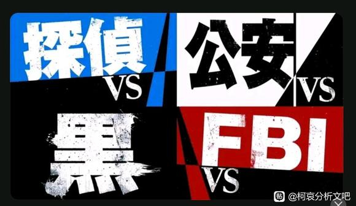

仅针对分析，不针对随手发的言论，也不针对同人。能算得上误区的，一定是有官方实锤为证的。
误区1：红方很多，很多人会加入“红方”。
事实：官图为证，红方只有联调，最多能加上园子口中的“AKAI”——赤井这个姓，小柯都不能算红方。
官图还告诉了大家几个事实：攻氨和黑没有VS，势力除了红黑还有很多别的，跟组织对决不是下棋而是大乱斗。
误区1：红方很多，很多人会加入“红方”。
事实：官图为证，红方只有联调，最多能加上园子口中的“AKAI”——赤井这个姓，小柯都不能算红方。
官图还告诉了大家几个事实：攻氨和黑没有VS，势力除了红黑还有很多别的，跟组织对决不是下棋而是大乱斗。

占个前排
啊，现在还有人以为红方是一伙的
看看鬼才哥说啥误区2：子供向，价值观都很正。
事实：是不是子供向，目前不好说，但价值观，可以肯定的是没想象中那么简单，漫画原画传达的并不是非黑即白的价值观。
若狭跟组织作对，但价值观如何，大家根据1103-1109话自己评。
另外，柯为了救哀，制造失火事故；哀为了帮玛利亚，用点火的办法来阻止。哀还知道什么时机灭火，柯就是管烧不管灭。如果失火事故仅仅隔绝了皮斯科和琴酒、伏特加，柯回本；如果烧死皮斯科，赚；烧死皮斯科和琴酒、伏特加，赚了不算，还有超级加倍。
事实：是不是子供向，目前不好说，但价值观，可以肯定的是没想象中那么简单，漫画原画传达的并不是非黑即白的价值观。
若狭跟组织作对，但价值观如何，大家根据1103-1109话自己评。
另外，柯为了救哀，制造失火事故；哀为了帮玛利亚，用点火的办法来阻止。哀还知道什么时机灭火，柯就是管烧不管灭。如果失火事故仅仅隔绝了皮斯科和琴酒、伏特加，柯回本；如果烧死皮斯科，赚；烧死皮斯科和琴酒、伏特加，赚了不算，还有超级加倍。
2023-09-25 12:09 | Diaosi🌸:哈哈哈😇你就不能当这话没发生过吗2023-09-25 12:34 | 顽皮鬼才:回复 Diaosi🌸 :人命关天对很多人来说是真理，但对小柯来说，就是哀命关天。因为哀命关天，所以小柯连超级加倍都不管了，其他的小事自然也不需要放眼里。2023-09-25 12:39 | 顽皮鬼才:回复 Diaosi🌸 :从柯和哀的视角来看，就是目的导向，目的以外的，都是小事，不需要投入关注。2023-09-25 18:48 | RA12447:子供向很难评啊。分尸案，掉头案，图书馆长蓝色古堡之类的“童年阴影”，高佐的“松软床垫”，贝姐老琴的“马丁尼暗示”，兰姐和哀哀的裸背，这些能给小孩看么2023-09-25 19:28 | gjfdhjhgh1568:名柯现在顶多是全年龄向2023-09-26 00:48 | 雨季雨翼:就是这个案子让我确定，柯是结果优先主义，虽然他会竭尽全力保证所有人包括罪犯的正当权益，但条件限制下，他会取舍最佳结果甚至放弃一部分人的利益。这个案子能救出哀就是他认为的最佳结果，其他的顾不上。因为这个管烧不管灭其实挺危险的，毕竟是酒窖，一个不小心整个酒店说不定都没了。2023-09-26 02:09 | 顽皮鬼才:回复 雨季雨翼 :管烧不管灭，非常有可能导致超级加倍的结果，在当时小柯看来，其他人的命加起来不如哀有价值。哀命贵无疑。2023-09-27 09:02 | 顽皮鬼才:回复 RA12447 :后半段估计不行，18禁还差不多2023-10-01 07:22 | -墜機飛行員-:本身柯南就不是子供向定位吧，不是青年漫少年漫吗，或者恋爱推理喜剧2023-10-01 09:28 | 顽皮鬼才:。子供向那是哆啦A梦的类型。
回复 -墜機飛行員- :哆啦A梦现在看来也不怎么子供向呀，以前预言的道具现在非常常见2023-10-01 09:48 | 顽皮鬼才:回复 -墜機飛行員- :感觉是青年向的，年轻一代发明家专属2023-10-01 11:00 | -墜機飛行員-:回复 顽皮鬼才 :是的，哆啦也很深刻的，F老师毕竟也是大师级别。2024-01-12 12:04 | 放假最快乐:看你怎么理解什么是子供向。青山都不敢把黑田画成纯黑立场的酒厂成员，你之前怀疑霓虹恭胺和乌丸是一家青山到现在也没直接画出来，从此举当切入点来看青山对主线剧情的刻画就考虑到zzbzq，更别提前首项大冈顶多是个灰色，不敢显摆大冈和乌丸也是一家。2024-01-12 12:09 | 放假最快乐:而且青山在某次访谈里还说过之后再也不画川中岛模式的案件了，因为那黑敬茶影响到了读者对名柯里霓虹景芳一直以来的良好形象，寻思着那个胺子里的黑敬茶级莂植物够低了青山以后都不会画此类型的胺子了，可想而更高的黑田与大冈他是更不敢画成纯黑的。大冈灰色也多少沾点红
赶上直播了
速度
红方这个说法确实一直存在但不准确，大伙都很难分的很细，最多就是清楚“红方”里也并非铁板一块完全联合。这个真正的分区能广而告之的话，对一些价值观、阵营分析会好很多。跟m26里柯南对秀一没有信赖箭头一样，其实柯南对工藤家以外的势力都是以合作的态度，因为牵扯到哀在胜利后的各类问题（科研归属，疑罪定罚）柯南从未对外全盘托出报以绝对的信赖。
2023-09-25 12:45 | 顽皮鬼才:“红方”这一个词的来源大概是红黑对决。赤井秀一对阵琴酒，秀一姓红，琴酒姓黑泽，emmm确实是红黑对决。2023-09-25 12:51 | 顽皮鬼才:组织认得盯上哀爸的成果并挖走哀爸，其他机构也认得如法炮制。哀能活命，原因就在于神秘，除了乌丸和朗姆，其他人和机构不知道她带着多少秘密，也不知道她的秘密有多高的价值。
误区3：结局是皆大欢喜。
事实：如果说是主线各方势力皆大欢喜，那我建议再看看一楼的官图，摆明了最好的结局也就是零和博弈，最惨的结局则是各方都付出惨重代价而毫无所得。
如果说是感情线，那也是说不通的。漫画里就出现过多次有人对某对组合很不爽的剧情，如果相应的组合爽了，ta就不会爽，皆大欢喜那是讲玩笑的。
事实：如果说是主线各方势力皆大欢喜，那我建议再看看一楼的官图，摆明了最好的结局也就是零和博弈，最惨的结局则是各方都付出惨重代价而毫无所得。
如果说是感情线，那也是说不通的。漫画里就出现过多次有人对某对组合很不爽的剧情，如果相应的组合爽了，ta就不会爽，皆大欢喜那是讲玩笑的。
2023-09-25 20:39 | 程傻狗:毫无所得不至于，但是代价肯定得付出，不然要是“红方”无伤通关酒厂，就显得塑造了这么长时间的压迫力十足的酒厂实际上是外强中干，成🤡了2023-09-25 21:31 | 顽皮鬼才:回复 程傻狗 :太至于了，哀也许会想尽办法把药物和资料全部销毁。这一大堆机构要的不就是药物和资料么？销毁之后爱要就要，2023-09-25 21:32 | 顽皮鬼才:回复 程傻狗 :如果他们不介意的话，就用他们的裱糊技术来修复2023-09-25 21:40 | 程傻狗:回复 顽皮鬼才 :这个肯定，a药这个东西怎么看怎么都得在结局时候销毁，要么就是留悬念，还能在名柯本体完结之后再水其他剧情啥的2023-09-26 02:52 | 平者深黑:青山说过：“要找到哀愁和HE之间的界限并不容易，确实值得一试的”。我觉得他的意思是，结局是整体是HE，但不会是所有人都获得幸福那种，而是一种带着一些缺憾的HE2023-10-02 11:20 | 贴吧用户_7PX2yAy:回复 平者深黑 :真的吗，什么时候说过

红方是指敌人都是组织，但其实里面是各个势力因为共同敌人而短暂合作。我是这么认为的，各个势力还有信息差，就比如A药。之所以加表哥加初恋其实是拉秀一和透子这两个势力主要成员共同保下A药的信息，如果A药被暴露，根本就无法合作，都想抓住组织研究组。
其实我怀疑美方势力会不会知道A药的一些信息，所以才派那么多人卧底。公安主要就是因为组织是恐怖组织才下场。
其实我怀疑美方势力会不会知道A药的一些信息，所以才派那么多人卧底。公安主要就是因为组织是恐怖组织才下场。
2023-09-25 12:58 | 顽皮鬼才:抓研究组和瓜分二战战败国科学家一模一样，我相信米国肯定干得出来，德特里克堡就是典型的731遗毒2023-09-25 13:41 | 花季那点殇:回复 顽皮鬼才 :是的，无论什么时候，科研人才都是很重要的基石
误区4：柯爸的人脉以后会用上、柯爸的人脉很有用。
事实：柯爸提出要找ICPO，那么柯爸的人脉在ICPO。m26真的来了个ICPO，那么ICPO在m26干了什么事呢？一个人脸识别系统差点把哀给送走了。
玩红警都能理解，这就是在自己家里爆炸的自爆卡车，这在现阶段是肯定不能用的。要用除非小柯家和阿笠博士家有足够的武装保护柯和哀的安全，但这明显是做不到的。
事实：柯爸提出要找ICPO，那么柯爸的人脉在ICPO。m26真的来了个ICPO，那么ICPO在m26干了什么事呢？一个人脸识别系统差点把哀给送走了。
玩红警都能理解，这就是在自己家里爆炸的自爆卡车，这在现阶段是肯定不能用的。要用除非小柯家和阿笠博士家有足够的武装保护柯和哀的安全，但这明显是做不到的。
2023-09-25 17:43 | 辣舞西弟:icpo现实里low得要死的东西，还能上天不成2023-09-25 18:53 | RA12447:看后续直美在漫画登不登场，会不会引用icpo设定2023-09-25 19:01 | 贴吧用户_QC7XaCG:印象里优作的人脉主要是被帮过忙的官方组织和作为侦探小说名家收获的粉丝，前者顺风局（不清楚A药的秘密、一起打酒厂）是好帮手，逆风局（狼军对友军血肉的向往）和绝境（比如M26柯哀身份双双暴露）还是要靠粉丝中的惊喜（樱花班篇的那种粉丝）和共同利益足以令其徇私的个别狼君（类似于赤安），大概~2023-09-26 10:54 | 贴吧用户_0Q9VeKU:回复 辣舞西弟 :现实里拉又不代表名柯世界观就拉。在名柯里FBI还是正面形象呢（至少目前是）2023-09-26 11:43 | 顽皮鬼才:回复 贴吧用户_0Q9VeKU :你确定么？詹姆斯把赤井秀一意图干的坏事都说了。詹姆斯这做法确实很丑国，干过但是别人不知道的坏事非要说出来。2023-09-27 09:04 | 顽皮鬼才:回复 RA12447 :如果登场，大概是单人以个人名义登场，以机构名义登场真的像是在送命2023-10-05 00:25 | 顽皮鬼才:回复 辣舞西弟 :这坑爹操作会把柯和哀送上西天我信。
蹲
蹲蹲
正常红方概念不就是主角团的一方，那么复杂干啥 柯南就是红方核心，前期红方就柯南灰原，现在红方有赤井安室这些。大伙的红方就是代指主角这边和黑组织对抗的人，像玛丽若狭这种就不跟主角通气的就不是红方。
柯南就是红方核心，前期红方就柯南灰原，现在红方有赤井安室这些。大伙的红方就是代指主角这边和黑组织对抗的人，像玛丽若狭这种就不跟主角通气的就不是红方。
柯南就是红方核心，前期红方就柯南灰原，现在红方有赤井安室这些。大伙的红方就是代指主角这边和黑组织对抗的人，像玛丽若狭这种就不跟主角通气的就不是红方。2023-09-26 01:17 | 烧饼右京:没那么简单，其实应该是分组织和反组织的，和组织对抗的成员里面成分就复杂了……2023-09-26 02:00 | 顽皮鬼才:你觉得不复杂，但柯不觉得。柯可以请目暮按正常程序把皮斯科扣下来，但联调从头到尾偷偷摸摸，另外，某些人可以点火烧掉整个岛不被看到脸就没事，某些人拿消防报警器随意折腾也不需要承担任何后果。2023-09-26 02:01 | 顽皮鬼才:官图就画了，小柯不是红。红黑对决恰好就是赤井秀一vs琴酒，赤井秀一姓红，琴酒姓黑泽，红黑就是从两个人姓名里抠出来的
黑组白字黑底，公安黑字白底，有没有特殊意义
2023-09-26 01:56 | 顽皮鬼才:详情请见m6灰原哀的逆天发言。2023-09-29 12:08 | 贴吧用户_5PNGEJJ:回复 顽皮鬼才 :m6不是同人吗2023-09-29 12:13 | 顽皮鬼才:回复 贴吧用户_5PNGEJJ :这句话是代表了倭国现状的。哀在漫画还说过金钱买不来友谊。
为什么左下角一个黑字？
因为老板姓乌丸，经常带队的打手姓黑泽。用黑来代表这个团体完全没有问题。
为什么某一篇章名叫红黑对决？因为赤井秀一姓红，琴酒姓黑泽。红vs黑=赤井秀一vs琴酒
因为老板姓乌丸，经常带队的打手姓黑泽。用黑来代表这个团体完全没有问题。
为什么某一篇章名叫红黑对决？因为赤井秀一姓红，琴酒姓黑泽。红vs黑=赤井秀一vs琴酒
所以你觉得渗入绯色的黑色波纹是指FBI里的组织卧底吗
2023-09-26 04:24 | 顽皮鬼才:红可以是指联调，当然也可以指红家。看怎么解读咯
（略）总之，青山老师比较喜欢娱乐作品？
青山：没错。大学的时候，我很欢黑泽明超赞的娱乐作品，到了现在依然喜欢娱乐性强的HE作品。这种话如果说的太多，想要解读《柯南》结局的读者大概就会现身了吧（笑）。
——不不，您要通过什么方式来实现HE也是个值得探讨的问题。
青山：对对对。而且，这种东西因人而异。就跟刚才说的“装”和“太装”一样，对于哀愁和HE之间的关系，想要找到那个界线也不容易，但却是值得一做的。
青山：没错。大学的时候，我很欢黑泽明超赞的娱乐作品，到了现在依然喜欢娱乐性强的HE作品。这种话如果说的太多，想要解读《柯南》结局的读者大概就会现身了吧（笑）。
——不不，您要通过什么方式来实现HE也是个值得探讨的问题。
青山：对对对。而且，这种东西因人而异。就跟刚才说的“装”和“太装”一样，对于哀愁和HE之间的关系，想要找到那个界线也不容易，但却是值得一做的。
2023-09-26 02:46 | 平者深黑:来自青山刚昌三十周年三万字访谈，事务所翻译版 https://bbs.aptx.cn/thread-302375-1-1.html2023-09-27 09:05 | 顽皮鬼才:柯哀he，世良真纯不舒服。xlhe，xl的全家除了他们两人都不舒服
和组织敌对的红方其实主要是四派:日本政府（公安和首相政客）、美国情报机构（CIA和FBI）、不代表政府立场的民众（柯南、小哀、博士，世良、玛丽、若狭）、接受保护计划的证人（瑛佑、新出）。这四派每一方都不是铁板一块，而且他们的目标也不一样
2023-10-02 11:25 | 贴吧用户_7PX2yAy:玛丽算进mi6去吧（m16还是mi6来着忘记了）若狭已经无所牵挂无所畏惧，很危险的人物，感觉是目的最强烈也最单纯的2023-10-02 11:27 | 昔何沐:回复 贴吧用户_7PX2yAy :玛丽是MI6的人，但是她现在的立场不是代表MI6，就和伊织无我的现在的立场不是公安一样
黑方严格意义上也分派别，朗姆目前的位置就是执行总监督，他有自己的派系（库拉索 宾加…）。琴酒则是外勤组长，这个组的常备成员是（伏特加 香缇 科伦）。匹斯可、宫野厚司、艾琳娜·宫野都是朗姆时代的元老，如果还活着也会有这部分的派系（爱尔兰 雪莉）。贝尔摩德 波本 基尔 则是另一个组（更类似与一个支援组）
2023-09-26 11:46 | 顽皮鬼才:你提的这些还主要是科研部门和杀手部门的，行政部门、商务部门也许比你想象中的水更深。2023-09-26 20:20 | 昔何沐:回复 顽皮鬼才 :匹斯可 原佳明严格来说就是商业部门2023-10-07 11:31 | 顽皮鬼才:回复 昔何沐 :朗姆大概是商务部门的，商业方法解决不了问题的话，那用物理方法解决。
蹲
误区5：联调是好人。
事实：詹姆斯已经把赤井秀一卧底的原因披露了，就是冲着科学家去的，或者说就是冲着科研成果去的，反正不是干什么好事。詹姆斯这做法确实非常丑国。
丑国曾经有一头很胖的猪，当众发言“我们撒谎，我们欺骗，我们偷窃”。啥意思呢？丑国会把干过了但别人不一定知道的事情老实说出来。
既然詹姆斯已经承认了干坏事，那就别试图洗地了，联调本身就不是什么善良的机构。
事实：詹姆斯已经把赤井秀一卧底的原因披露了，就是冲着科学家去的，或者说就是冲着科研成果去的，反正不是干什么好事。詹姆斯这做法确实非常丑国。
丑国曾经有一头很胖的猪，当众发言“我们撒谎，我们欺骗，我们偷窃”。啥意思呢？丑国会把干过了但别人不一定知道的事情老实说出来。
既然詹姆斯已经承认了干坏事，那就别试图洗地了，联调本身就不是什么善良的机构。
2023-09-26 13:38 | 月球右边的角落:情报机构如果不会“骗人”，那还怎么当情报机构啊2023-09-26 19:53 | 顽皮鬼才:回复 月球右边的角落 :那头猪公开承认他们欺骗，对比詹姆斯，也是公开承认他们欺骗2023-10-02 11:27 | 贴吧用户_7PX2yAy:战忽局和联调就是 还互相利益不平等掐架呢 柯世界观里也是 水无和akai所代表的利益都会有纠纷 梅方自己都不是铁板 还想着红方铁板2023-10-05 01:38 | 顽皮鬼才:回复 贴吧用户_7PX2yAy :在这些机构看来，自身的利益是利益，其他人的利益随意损害

今年新人太多，难得看见楼主熟面孔，还是以前被封过的
2023-10-01 22:10 | 顽皮鬼才:你最后一句说的到底是谁？
我个人觉得就是，红方里这些个人的作用会大于机构，是个人直接和小柯挂钩，而不是机构，这就牵扯出大量利益问题，不过角色为大的话，肯定是个人正面，机构随意
2023-10-04 21:10 | 顽皮鬼才:这些机构的人最后都要空手而归。玛丽除了吃个药也要空手而归，不然问题可大了，长生不老、返老还童太恐怖了，哀要做的当然包括销毁资料。

我个人感觉公安是最有争议性的，主要还是公安的作为是为了日本这个国家，FBI再怎么说名义上是为了对付恐怖组织，而最新的几话中很多都和日本首相有了一定的关联，首相这个职位就掌握了日本这个国家的命脉，而日本公安定是听命于日本政府高层的，再加上是本地的，和FBI不同，虽然FBI办事麻烦了些，但山高皇帝远，很多事都可以自己做决断，最近几年公安还老是自己出问题，很有可能名柯中日本政府要大洗牌，公安也要受其牵连
可能有参照默示录四骑士的阵营颜色。
有趣的是象征死亡的pale rider，在日本文化中会写作青白い騎士，而这个苍白也会说近似“灰色”。蓝色阵营和灰色阵营其实才是同一个阵营
有趣的是象征死亡的pale rider，在日本文化中会写作青白い騎士，而这个苍白也会说近似“灰色”。蓝色阵营和灰色阵营其实才是同一个阵营